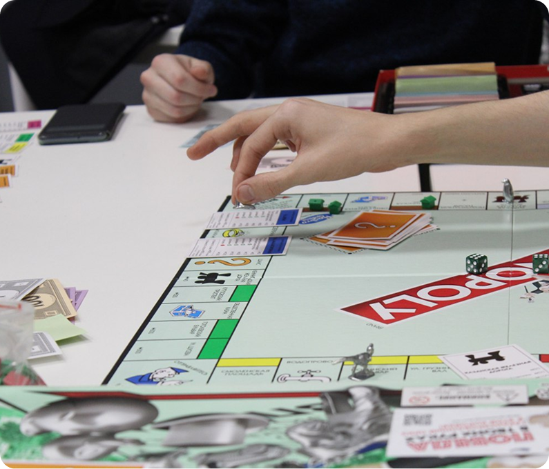
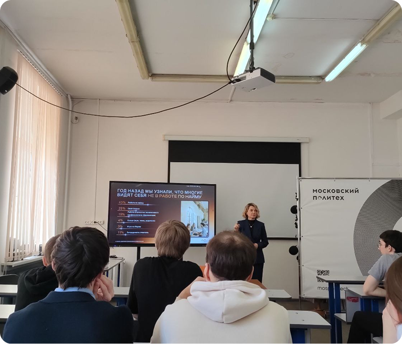

92 встреча клуба Полигранник
2 марта мы посетили еженедельную встречу клуба полигранник, на которой нам удалось поиграть в настольные игры и хорошо провести время.

Мастер-класс т 2ГИС: всё про карьеру
7 апреля мы были на мастер-классе руководителя HR отдела 2ГИС Лидии Марковой, где нам рассказывали трудоустройстве в крупные бренды, требованиях к специалистам и главных трендах на рынке труда за последние несколько лет.